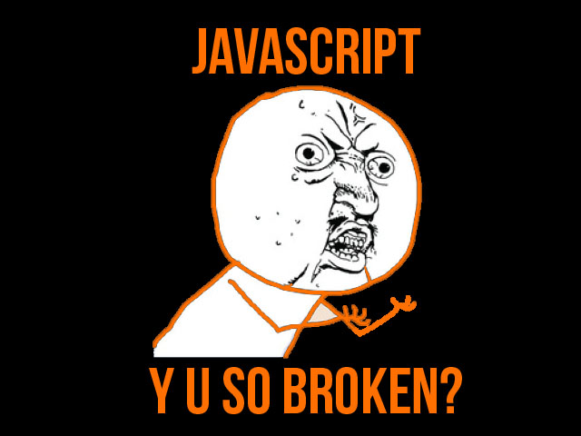
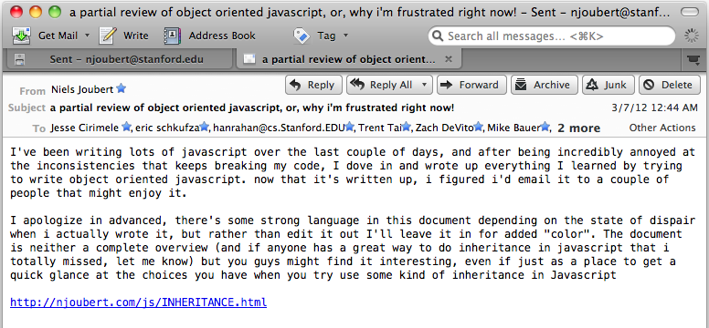
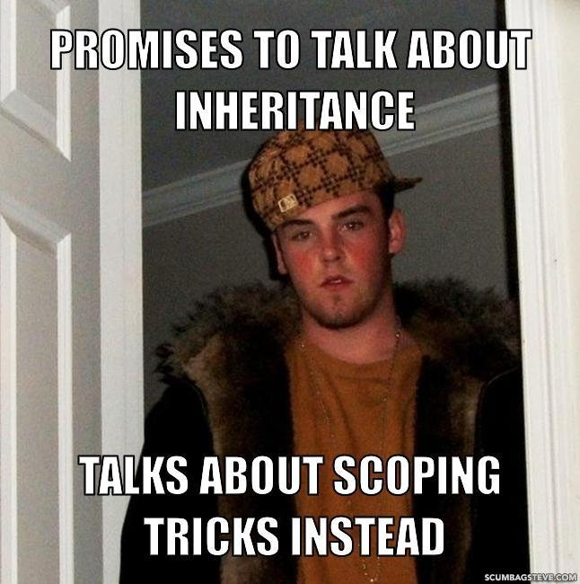
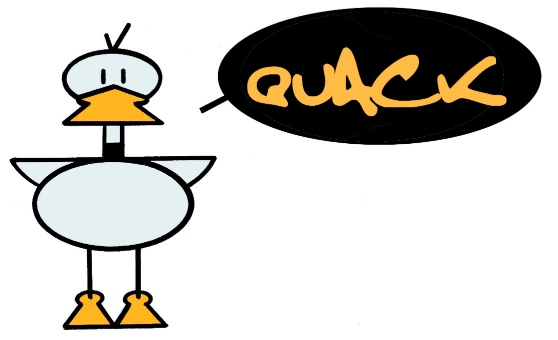
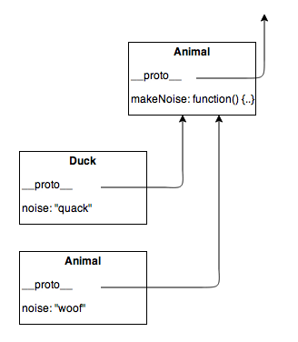
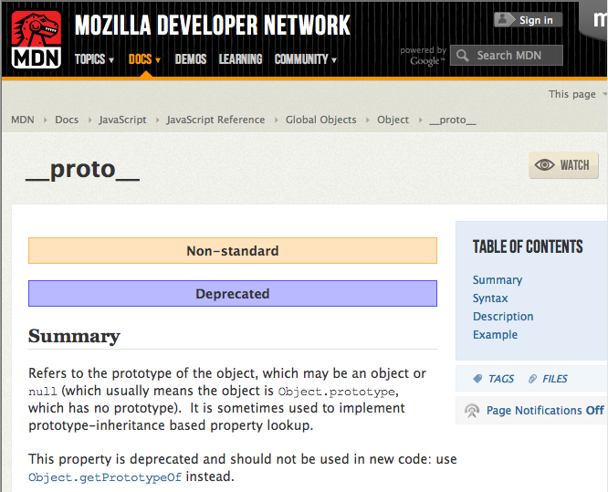
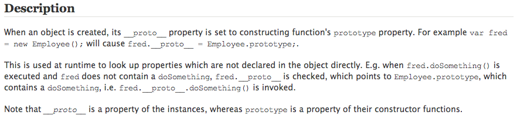
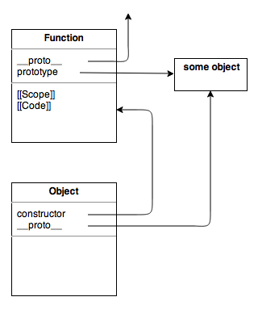
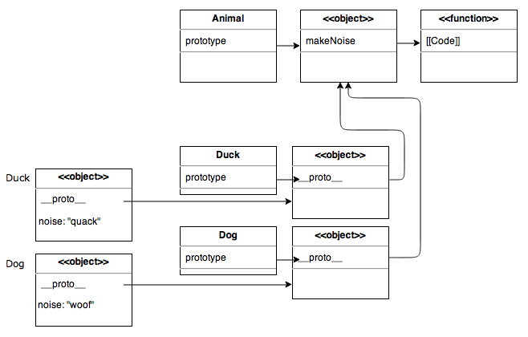

Objects, Functions and Inheritance...
I love javascript!
- A succinct, general, very small language built from very simple parts - like Scheme but with better syntax!
I love javascript!
- Interpreted, in a environment with direct access to the most prevalent cross-platform multimedia environment.
I love javascript!
- Simple, powerful, infinitely at home in its environment
- It's a bit like C-meets-LISP 40 years later.
I love javascript!
- "JavaScript is an amalgam of good parts and bad parts. Its best parts came from Self (prototypes) and Scheme (lexically scoped nested functions). But the interaction of those two very good parts produced some very bad parts."
-Douglas Crockford
Javascript annoys me!
So this rant happened
- I wrote a rant,
so I'm giving a talk

Who's responsible?
- Goal: Validating forms on the client
- "Else something worse would have happened"
- Today: The most widely used language*
- * Totally unsubstantiated claim.
Let's play
Objects, Functions, Inheritance
Object Based, not -Oriented
- Classes have two purposes: make things easy for compiler writers and keep poor programmers busy.*
* I am going to retract this statement in about 10 slides...
Functions
- First Class, Lexically Scoped, Nested Functions.
Every language should have this
Functions and Objects
- Objects are dictionaries, functions are first class...
Objects make great modules!
From underscore.js:
OK OK but let's use them as objects already
Hint: It's gonna get rough
Function invocation and "this"
-
-
<ident>() lookup is scope chain, create new scope, execute code in it.
-
<obj>.<ident>() - lookup <obj> in scope chain, lookup <ident> in object dict
(and more...)
- 1] binds
this to the global object
- 2] binds
this to the <obj>
- Real tension: Given first class functions and dictionary objects, we can't avoid deciding what to bind
this to.
Function invocation and "this"
-
-
<ident>() lookup is scope chain, create new scope, execute code in it.
-
<obj>.<ident>() - lookup <obj> in scope chain, lookup <ident> in object dict
(and more...)
- 1] binds
this to the global object
- 2] binds
this to the <obj>
Mistake: "this" to global
-
<ident>() binding this globally BREAKS NESTED FUNCTIONS!
Fix it with a feature
-
-
<ident>() - this is global
-
<obj>.<ident>() - this is <obj>
-
<obj>.<ident>.apply(this, args) - specify this binding:
- And more...
Inheritance
Oh boy, oh boy, oh boy!
An issue from before:
- Code duplication annoyance: JS is interpreted
Because we don't have classes, functions just live on the object itself
Hide it in the scope?
- Can fake private variables this way! Simple, powerful ideas.

duck typing
- We don't care about type relationships

but we do care about
- - Shared functionality (efficiency on the programmer's side)
- - Code reuse (efficiency on the compiler's side)
- - Efficient Identification (think of the Visitor Pattern for DOM Traversal)
- So, "Classes" are useful
- The idea: Specialized objects derived from General objects
- "Differential inheritance"
Prototypal inheritance
- Let's see what are Objects and Functions are comprised of
Prototypal inheritance
- So, as we expect, there is a pointer, __proto__, that points to the parent object. Let's try:

everything is broken!

MORE broken!

- WTF? OK, so we can't use
__proto__, (and in fact it doesn't work in IE or Opera)
- But it is used internally for lookup
Constructor Functions
- This is, by far, BY FAR, the biggest mistake in Javascript.
- Rumor has it, constructors was not in the original Mochascript,
but was later added to simulate Java constructors.
Constructor Functions
- This is, by far, BY FAR, the biggest mistake in Javascript.
- Rumor has it, constructors was not in the original Mochascript,
but was later added to simulate Java constructors.
The intent is not bad:
4th Function invocation:
-
new <func>():
-
- creates a new object (just a plain old object)
- sets this object's
__proto__ to <func>'s .prototype
- calls
<func> with this bound to the just-created object
- return this new object.
- OK, what the.....
- Each function has:
[[Scope]][[Code]] code string.prototype initially empty object
- Each object has:
__proto__: lookup <obj>.<ident>.constructor

-
Each function carries a prototype object with it, and when new() gets called, the created object's __proto__ points to this. Thus...
Constructor sets __proto__
So, this seems like a, uh, kinda a good intent. Imagine the compiler write:
right now it looks like the __proto__ can only be set by the constructor
during object creation
in diagram form
function Animal() {}
Animal.prototype.makeNoise = function() { return this.noise; }
function Duck() { this.noise = "quack"; }
Duck.prototype = new Animal();
function Dog() { this.noise = "woof"; }
Dog.prototype = new Animal();
var duck = new Duck();
var dog = new Dog();

in diagram form
function Animal() {}
Animal.prototype.makeNoise = function() { return this.noise; }
function Duck() { this.noise = "quack"; }
Duck.prototype = new Animal();
function Dog() { this.noise = "woof"; }
Dog.prototype = new Animal();
var duck = new Duck();
var dog = new Dog();
- BTW, notice how much this sucks:
- we have constructor functions, but you only run them ONCE when you define the class!, OR we use the lame "Call" syntax all the way up the tree.
Thus you end up with idiotic duplicated code like this:
WHAT THE?! SO WHY DO WE EVEN HAVE CONSTRUCTOR FUNCTIONS?!
THEY REALLY SHOT THEMSELF IN THE FOOT WITH THIS ONE!
pseudoclassical
- What Javascript came up with:
- we create a constructor function for each "Class".
- we use the prototype object to store "class-wide" things
- if we want to create an inheritance hierarchy, we use the prototype to point to a new object of the parent type. This object will, again, have a prototype object with the parent's class-wide functions on it.
-
Aside: what if you call a constructor function without using new?
-
Someone's going to hell for this... And not the fun hell where the rock- and pornstars go. The special hell for bad designers.
alternatives?
- 1) Have a separate Constructor, different from a normal function?
- 2) Stick with "self"-style and just have an object's parent pointer exposed and settable
- 3) ?
Can we fix this?
At least the interface?
Crockford: Hey, let's introduce a NEW way to generate Objects!
- OK, if we love self (and we do!) and we just want purely prototypal inheritance:
Still kinda sucks
-
Instanceof still doesn't work:
log(dog instanceof animal) //still failslog(animal.isPrototypeOf(dog)) //messy- Now, this is really messy to me. Two different ways to work with inheritance, yeack!
- and isPrototypeOf() is pretty new - not supported everywhere yet.
-
We lost the ability to have constructors
-
No differentiation between 'class' and 'object' (intentionally so).
options?
- a TON of ways to "fake" classical inheritance
- Different tradeoffs between speed, memory, visibility and ugliness.
-
My way
-
-
I want Classes and Objects*
-
I want a "constructor"
-
I want "constructors" to be able to call parent constructors
-
I want instanceof to work (efficient visitor pattern)
-
I want to minimize code duplication (aka lightweight objects): no storing of function on each new object
-
I'm okay with giving up private variables. I'll just use an encapsulating scope as a module.
* makes it easy to decide where code should live (Classes, not duplicated)
One ugly part left :-(
-
Dog and Duck both have the same __proto__, which is Animal's prototype.
Calling constructors still have to use "call"/"apply":
cool huh? not yet!
- Debugger: everything is called "SubClass"
- So we use eval():
Recap
- Great things:
- lexically scoped first class functions
- prototypal inheritance
- Weird things:
- 4 different invocation styles in JavaScript.
- The `this` pointer is painful!
- Constructor functions are a horrible design
- eval() is both good and evil
- I think it's hugely cool that everyone can invent their own JS as they go along to suit their needs.
ECMAScript 6
- New anonymous "Fat Arrow" functions
-
Semantics:
- Cannot be used as a constructor. PHEW!
- Always binds "this" to enclosing scope's "this". ALWAYS. Even when called as method. AKA, this is the ideal nested function.
- To have "this" receive a dynamic binding to an object:
(this, x) => this.property = x * x